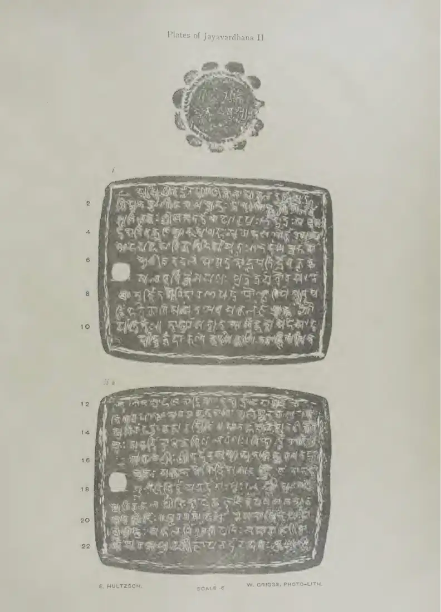
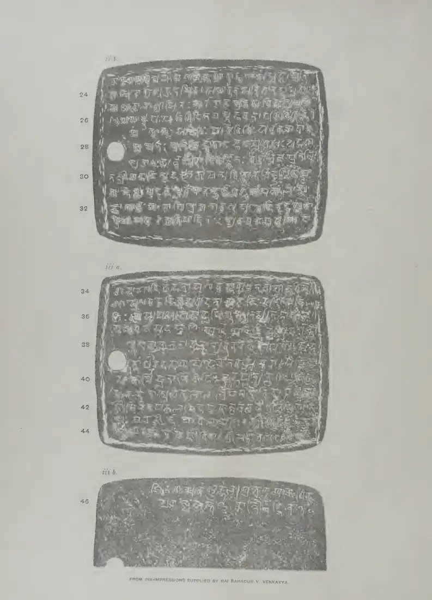

Ragholi plates of Jayavardhana II
RAGHOLI PLATES OF JAYAVARDHANA II.
BY HIRA LAL, B.A., M.R.A.S.; NAGPUR.
These plates were kindly sent to me by Mr. C. E. Low, I.C.S., Deputy Commissioner of the Bâlâghât district, Central Provinces. They were found in the village Ragholi belonging to the Sâletekri Zamîndârî, now under the Court of Wards and included in the Baihar tahsil of that district, by a cultivator while ploughing the field. There are three copper-plates, of which the second and third bear writing on both sides; the third plate has only two lines on the reverse side. The plates are broader in the middle than at the top or at the bottom. At the broadest part they measure nearly 6 1/2 inches, and the average height is 5 1/2". They are held together by a circular ring, 2 1/8" in diameter, which is somewhat thicker and rugged at the place where the two ends are soldered together. A circular seal with tasselled borders is attached to the ring and was put on it before the ends of the ring were soldered together. The seal has in two lines the legend Śrî-Jayavardhanadîvasya, which is enclosed by ornamental circles running round the bottom of the tassels. The ring was cut and resoldered by Rai Bahadur V. Venkayya, who kindly took for me the impressions which are reproduced on the accompanying Plate. The copper-plates were found when Mr. Low was writing the Gazetteer of the Bâlâghât District, in which an extract from my translation has already appeared.
The language of the inscription is Sanskrit, written in characters belonging to the northern class of alphabets. The average size of the letters is about 1/4". They are badly formed and somewhat difficult to read. The first 20 lines of the inscription (excepting the opening words Ôîn svasti Śrîvardhanapurât) and again lines 35 to 45 are in verse. The rest is Sanskrit prose. Final forms of t occur in lines 1 and 38, and one of m in line 45. The letter b is not distinguished from v. A notable orthographical peculiarity occurs in lines 32 f. and 40 f., where we find mv written for m in tâmvra and kamvala. On the other hand b is omitted in kuṭumina (l. 24) for kuṭumbinaḥ, but regularly expressed by v in dalâmvu (l. 41). The letters with a rêpha at the top sometimes assume a very peculiar shape such as in sarva (l. 25) and varsha (l. 37). At other places they have the usual form, as in sarva (l. 29). There is also a tendency to change the final forms of nasals into anusvâra in contravention of the accepted grammatical rules, as in pramukhâîn (l. 24) and purushâîn (l. 25). The ka of kamvala in line 40 f. has a peculiar form and differs from other kas occurring in the inscription.
1 The word praṣastâ is here evidently used in the same sense as praṣasti.
The object of the inscription is to record the grant of the village Khaddikā in the Katēraka district (l. 23) to a temple of the Sun-god at Chatṭulliha (l. 29 f.) by king Jayavardhana II. It was issued from Śrīvardhanapura (l. 1) and is dated in the 3rd year of his reign on the 30th day of the month Kārttika (ll. 46 and 31). Judging from the writing it may be assigned to the eighth century A.D.; the characters very much resemble those of the Paiṭhaṇ plates of Gōvinda III. dated in the year 794 A.D.1 Jayavardhana II. is described in lines 20-22 as a devotee of Mahēśvara, the lord of the whole Vindhya, and Mahārājādhirāja Paramēśvara. He belonged to the Śailavamśa (verse 1). His grandfather, who bore the same name as himself, killed the former king of the Vindhya and made the Vindhya his residence (v. 3). The son of Jayavardhana I. and father of the donor was Śrīvardhana II., who styled himself Vindhyēśvara (v. 4), and who may have founded Śrīvardhanapura from which the present charter was issued. Five more ancestors of this line are mentioned, the first of whom was Śrīvardhana I. His son was Pṛithuvardhana, who is stated to have attacked Gujarāt (v. 1). In his family was born Sauvardhana (v. 2), one of whose three sons killed the king of Pauṇḍra2 (Bengal and Bihar), while another conquered the king of Kāśi (Benares). Of this latter, whose name is not mentioned, Jayavardhana I. was the son (v. 3).
The first verse of this charter opens with an obscure epithet to Śrīvardhana I. who is called Kailās-āchala-tuṅga-śrīṅga-vipula-drōṇīja-vamśa-prabhuḥ, which apparently means 'the lord of the family of her who was born in the great valley of the lofty peaks of the Kailāsa mountain.' It is very difficult to hit at the true import of this expression, and the only conjecture I can hazard is that it may mean the Gāṅgavamśa, of which the Śailavamśa was probably a branch or a more well known name at that time. Otherwise it is difficult to see why in the same verse the same person should be called the lord or ornament of two families. If my conjecture is correct, the force of prakhyātō bhuvi (famous or known on the earth) preceding Śailavamśu-tilakaḥ would be apparent. The Śailavamśa is very probably identical with the Śailōdbhavas or Śilōdbhavas of Orissa, to which Prof. Hultzsch has kindly drawn my attention. In the plates of the time of Śaśānkarāja,3 a feudatory chief Mādhavarāja II., who issued the charter, is spoken of as belonging to the Śilōdbhava family, which is identical with the Śailōdbhava of the Buguḍa plates of Mādhavavarman4 as pointed out there. The former is dated in the year 619-20 A.D. and is the older of the two. Both were found in the Ganjam district, and both the charters were issued from Kōngēda or Kaiṅgōda, which is identified by Prof. Kielhorn with the Kong-u-t'o5 of the Chinese traveller Hiuen Tsiang, who visited the place in the year 639 A.D.6 This principality was included in the Kalinga country or, roughly speaking, Orissa. In fact the village granted by Mādhavarāja II. was situated in the district of Kṛishṇagiri, a synonym of Nīlagiri which is a name of Jagannātha (Purī) in Orissa.7 And it is well known that Orissa is the country where the Gāṅgavamśa originated. King Indravarman of Kalinganagara is spoken of as the 'establisher of the spotless family of the Gāṅgas,'8 an epithet which does not occur in other grants of the Gāṅgas of Kalinga. So he was a perpetuator of a dynasty with a new name, which probably he introduced in preference to an old one which was not very complimentary. The new name is a metronymic; so we may suppose that the one suppressed was a patronymic. The Buguḍa inscription tells us how one Pulindasēna worshipped Brahmā in order to create a fit ruler for the land, and how the god granted his wish by creating out of a rock the lord Śailōdbhava, who became the founder of the family of that name. However complimentary the story may have been in the beginning, it could not have failed later on to appear somewhat analogous to the alleged origin of low
1 Above, Vol. III. p. 103 ff.
3 Above, Vol. VI. p. 144.
5 Above, Vol. VI. p. 136.
7 Above, Vol. VI. p. 144.
2 Wilson's Vishṇu-Purāṇa, Vol. II. p. 170, note 5.
4 Above, Vol. III. p. 42.
6 Cunningham's Ancient Geography, p. 515.
8 Above, Vol. III. p. 127.
castes, which trace their origin to some such inanimate objects as scarecrows, dirt from Mahâdêva's body, or the sweat of his brow. In fact the aboriginal Gonds aver that their leader Lingo liberated the first men of the tribe from a cave in the Iron valley in the Red hill by removing a stone 16 cubits high with which Mahâdêva had closed the mouth of the cave, and out came 16 scores of Gonds at once.1 The Śailôdbhava origin would thus appear something like an improvement on this story. Recognising the tendency, which has always existed and still exists, to adopt eponymous names under the influence of what Sir Alfred Lyall calls the gradual Brâhmaṇising of castes, it would not be surprising to find a family with a dubious patronymic insinuating a non-Brâhmaṇical origin, preferring a metronymic connected with so holy a deity as the Ganges, in spite of the Kshatriya mode of calling themselves after the male parent. It will then be asked why in the present grant the Śailavamṣa was at all mentioned, to which an answer may be found in the fact that there are always three classes of people : the conservatives or those who would stick to the old things only, the moderates who would tolerate both the new and the old, and the extremists who would wholly discard the old, and probably the donor of the present grant belonged to the second class. All this is, however, extremely hypothetical, and I only hazard it in the hope that a better explanation may be forthcoming. By the way I may mention that it was the Gângavamṣa kings of Orissa who revived Sun-worship and built many temples dedicated to that deity ;2 and again most of the officials, such as samâhartṛi and sannidhâtṛi (l. 24), are those chiefly found in the grants of Orissa kings. These are other items in support of the donor's family connection with Orissa.
With regard to the places mentioned in the grant, I identify Khaddikâ with Khadi, a village three miles north-east of Ragholi where the plates were found. It is only a Sanskritised name like Lañjikâ3 for Lanji, which is also not very far away from this place. Katêraka is probably the present Katera near Katangi, 60 miles west of Ragholi. I cannot identify Chatṭulliha, unless it is a mistake for Raghulliha or Ragholi, where the plates have been found. With the elision of a little stroke in the first letter, and giving a slightly slanting position to the second, the word would read as Raghulliha. This may find support from the fact that the engraving of the grant is very defective, and that several other mistakes have been committed in lines 33, 40, 44, etc. I cannot find in the Central Provinces a place answering to Śrīvardhana-pura. It could not be Śrīvardhana in the Bombay Presidency, the famous seaport referred to by European travellers as Zilfardañ and celebrated as the birth-place of the first Peshwa.4 From what has been stated above, the family would seem to have come from a seaport in the east rather than from the west. But the place must be searched for nearer home, and it may be that it is now non-existent. The probability is that it was situated somewhere near Râmtek in the Nâgpur district. Five miles from this place there is a village called Nagardhan which was known as Nandivardhana5 in olden times, and local traditions assert that the surrounding country was ruled from that place by Kshatriya Râjas.6 The village contains ancient remains and is mentioned as the name of a district together with Nâgpur in the Dêôli plates of the Râshṭrakûṭa king Kṛishṇa III. dated in the year 940 A.D.7 It is plain therefore that
1 Cunningham's Reports, Vol. IX. p. 158.
2 See Hunter's Orissa, Vol. I. p. 279 f. Dr. Hunter says :— "At a remote period, Sun-worship, driven out of Vêdic India by materializing superstitions, found shelter on the secluded Eastern coast. Its existence in Orissa in ancient times is proved not only by the fact of a specific division of the country being devoted to it, but also by the rock writings : . . . The most exquisite memorial of Sun-worship in India, or I believe in any country, is the temple of Konârak upon the Orissa shore."
3 In the Ratanpur inscription of Jâjalladêva, Ep. Ind. Vol. I. p. 33.
4 Bombay Gazetteer, Vol. XI. p. 467.
5 Mr. Craddock's Settlement Report, 1895, p. 15.
6 It may be borne in mind that this part of the country was for a long time under Gonds and afterwards the Marâthas, and as a rule the memory of these only survives.
7 Above, Vol. V. p. 196 f.
Nandivardhana must have been a place of great importance before it gave its name to the district. I hold that this was founded by a successor of Jayavardhana II. who removed the capital from Śrīvardhanapura, also named after a king of the same line, to the place to which he gave his own name.1 The Râshtrakûtas rose in power on this side in the eighth century, and it is probably they who displaced the Śailavamśa dynasty of the Vindhya mountains. Nandivardhana or Nagardhan2 is about 100 miles from Ragholi, and both were included in the same district about a century ago. It may also be stated that, so far as I have been able to find, there are no other villages ending in vardhana in Bâlâghât or any of the surrounding districts, and the name is so peculiarly different from those of other villages in the locality that it may almost be called unique; for these reasons the location of Śrīvardhanapura round about Nandivardhana or Râmtek carries at least a certain probability with it.
TEXT.2
Seal.
1 श्रीजयव- 2 ईनदेवस्य [॥*]First Plate.
- 1 श्रीं स्वस्ति श्रीवर्द्धनपुरात् [॥*] 3कैलासाचलतुङ्गशृङ्ग-
- 2 विपुलद्रोणोजयेशप्रभुः4 प्रख्यातो भुवि शैलवं-
- 3 शतिलकः श्री — —5वर्द्धनो यो नृपः । तत्पुत्रः पृथव-
- 4 ईनो निजभुजव्याक्षष्टखड्ग[:] मुया6 देशं गौर्ज्जरमास-
- 5 साद सहसा विक्रान्तिभिर्यस्ततः ॥ [१*] तद्दंशप्रभवो
- 6 व्यजोजनदलं सौवर्द्धनो भूपतिर्भूचक्रक्र-
- 7 मलध्वविक्रमयशः7 पुत्रत्रयं त्वौरसं । ते-
- 8 षामुर्जितवैरिदारणपटुं पौण्ड्राधिपं क्ष्माप-
- 9 तिं हल्वैको विषयं तमेव सकलं जग्राह शो-
- 10 र्यान्वितः ॥ [२*] ताभ्यामन्यतमो विहल्य सहसा द-
- 11 पीडतं दारुणं काशिं काशिनराधिपं सित-
Second Plate; First Side.
- 12 गुणो जग्राह जेता द्विषां । तत्पुत्रो जयवर्द्धने-
- 13 ति वचसा ख्यातो वरो भूभृतां विम्थे विम्थनरेशमेव
1 It is noticeable that all names of this line end in vardhana.
2 From the original plates. I am indebted to Pr f. Hultzsch for a few corrections in my readings.
3 Metre: Śârdûlavikrîdita; also of the two next verses.
4 Read °जवंश°.
5 There are two letters here which appear to have been struck off by the engraver. The °metre also shows that they were redundant.
6 Read पुरा.
7 Read °लम्ब°.
8 Read °मूर्ज्जित°.
Plate 1 is bound after this page.
Plate 2 is bound after this page.
14 सुचिरं हत्वा चकार स्थितिं ॥ [३*] 1मातङ्गदानचतदीनचे-
15 ष्टः 2सवर्द्धितानेकविशालवंशः । विम्येश्वरो विम्य
16 इवाचलश्रीः श्रीवर्द्धनस्तस्य सुतो वभूव3 ॥ [४*] 4तस्या-
17 व्यजः सकलवैरिविनाशदक्षो जातो महा-
18 गुणनिधिर्ज्जयवर्द्धनाख्यः । लक्ष्मीप्रगाढ-
19 परिरंभणपोडिताङ्गं दृष्ट्वा दिवं यमगमत्परु-
20 षेव कीर्तिः ॥ [५*] परममाहेश्वरो मातापिहपादा-
21 नुध्यातः सकलविंध्याधिपतिः महाराजाधिरा-
22 जपरमेश्वरश्रीजयवर्द्धनदेवः कुशलो
Second Plate; Second Side.
23 कटेरकविषयीयखड्दिकायां ब्राह्मणा[न्*]5 संपूज्य प्रति-
24 वासिनोन्यांश्च कुटुम्बिन6 (1) समाहर्त्तसन्निधाहप्रमुखां7
25 यथाकालाध्यासिनः सर्वराजपुरुषां8 विषयपतीं-
26 श्च समाज्ञापयति [॥*] विदितमस्तु भवता9 यथास्माभिर-
27 यं यामः सनिधिः सोपमिधिः सर्व्वकरादान-
28 समेतः प्रतिषिद्धचाटभटप्रवेशः सदशा-
29 पराधः सर्व्वपोडाविधर्जितः चटुल्लिहप्रतिष्ठि-
30 तश्रीमदादित्यभट्टारकाय अधिष्ठानविज्ञप्तिकया
31 10कात्तिक्यामुदकपूर्वमाचन्द्रार्क्ष्यग्रहसमकालोप-
32 भीगार्थं मातापित्रोरात्मनश्च पुण्याभिवृद्धये ता-
33 11म्ब्रशासनेन प्रतिपादित इत्यवगत12 समुचितभो-
Third Plate; First Side.
34 गभागादिकं भक्ता13 सुखं वस्तव्यं ॥ तथा चोक्तं धर्म-
35 शास्त्रे ॥ 14वहुभिर्व्वसुधा दत्ता राजभिः सगरादि-
36 भिः । यस्य यस्य यदा भूमिस्तस्य तस्य तदा फलं ॥ [६*]
37 षष्टिं वर्षसहस्राणि स्वर्गं मोदति भूमिदः । आ-
1 Metre : Indravajrā.
2 Read संवर्द्धिता०.
3 Read बभूव.
4 Metre : Vasantatilaka. The simile here is विरुद्धमतिकारिका ; compare श्रीनियोगाद्गदितुमिव गतेत्यस्बुधिं यस्य कीर्तिः in the Śāhityaprakāsa, 7th ullāsa, 316ka 241. For this parallel quotation I am indebted to Pandit Hirananda Sastri, M.A.
5 Read ब्राह्मणान्.
6 Read कुटुम्बिनः.
7 Read ०प्रमुखान्.
8 Read १पुरुषान्.
9 Read भवतां.
10 Read कार्तिक्या०.
11 Read ताम्ब०.
12 Read इत्यवगत्य.
13 Read सुक्ता.
14 Read बहु०.
38 च्छेत्ता चानुतन्ता1 च तान्येव नरके वसेत् ॥ [७*] स्वद-
39 त्तां परदता2 वा यो हरेत वसुभरां । स विष्ठा-
40 यां क्वमिंभूता3 पितृभिः सह पच्चते ॥ [८*] इति क-
41 4स्वलदतास्वविन्दुलोलां श्रियमनुचिन्य मनुष्य-
42 जीवितं च सकलमिदमुदाहृत5 च वुध्वा6 न हि पुरु-
43 वैः परकीर्तयो विलोप्याः ॥ [९*] श्रीश्रीवर्द्धनदेव-
44 स्य पाद[पद्मोप]जीविना7 । श्रीमहाचण्डपालेन लि-
Third Plate; Second Side.
45 खितं शासनं शुभम् । [१०*] प्रवर्द्धमानविज-
46 यराज्ये सस्व8 ३ कार्त्ति[के ?] दिन ३० [॥*]
TRANSLATION.
(Line 1.) Om. Hail ! From Śrīvardhanapura.
(Verse 1.) (There was) king Śrīvardhana (I.), the lord of the family of her9 who was born in the great valley of the lofty peaks of the Kailāsa mountain, (and) famous on (this) earth (as) the ornament of the Śailavamśa. His son Prīthuvardhana, formerly having drawn the sword with his own arm, at once overcame the Gaurjara country by (his various) attacks.
(V. 2.) King Sauvardhana, who was born in his family, begat three sons of his own, who in due course acquired the glory of heroism on the circle of the earth. One of them, possessing valour, having killed the Pauṇḍra king who was skilled in rending up (his) powerful enemies, took the whole of that country.
(V. 3.) The third of them,10 of white (i.e. pure) character, the vanquisher of foes, having forcibly killed the self-conceited (and) cruel king of the Kāśis, took Kāśi (from him). His son, known by the name of Jayavardhana (I.), the best of kings, having killed the lord of the Vindhya, took up his residence in the Vindhya for a long time.
(V. 4.) His son was Śrīvardhana (II.), the lord of the Vindhya, who possessed immovable (permanent) wealth like the immovable Vindhya mountain itself, who banished poverty by gifts of elephants, (and) who augmented the prosperity of various (other) big families.
(V. 5.) His son, skilled in destroying all (his) enemies (and) a treasury of great virtues, was called Jayavardhana (II.). The goddess of Wealth so closely embraced him that the goddess of Fame, as if (jealous of her cowife), out of anger ascended to the heavens.11
1 Read चानुमन्ता.
2 Read परदत्ता.
3 Read क्वमिंभूत्वा.
4 Read कमलदलास्वविन्दु०.
5 Read ०मुदाहृतं.
6 Read बुद्धि।.
7 The words in brackets are very common in inscriptions; see e.g. Ind. Ant. Vol. IV. p. 210, note 3.
8 Read संवत्.
9 I take drṅṇtja-vaṁsa to stand for drṅṇtjā-vaṁsa in accordance with Pân. VI. 3. 63, and to mean the Gaṅgā-vaṁsa.
10 Literally, 'another than the two.'
11 The idea is that he was very wealthy, and that his fame reached up to the heavens.
(L. 20.) The devout worshipper of Mahésvara (Šiva), who meditated on the feet of his parents, the lord of the whole Vindhya, the Mahárájádhirája Paramésvara, the illustricus Jayavardhanadéva, being in good health, having worshipped the Bráhmanas in (the village) Khaddiká in the district (vishaya) of Katéraka, issues a command to the inhabitants and other householders (as well as) revenue collectors, receivers of public property and so forth, as they are appointed from time to time, (and) to all state officers and provincial governors.
(L. 26.) "Let it be known to you that this village is given by Us, with hidden treasures (and) deposits, together with (the right of) taking all the dues, with the prohibition for the regular or irregular forces to enter (the village), with (the fines leviable on) the ten offences,1 free from all troubles, to (the temple of) the holy Āditya-bhaṭtáraka (i.e. the Sun-god) set up at Chatṭulliha, at the request of the residence (viz. Śrívardhanapura, l. 1), on the Kárttiki (tithi), with libations of water, to be enjoyed as long as the moon, the sun and the planets endure, for the purpose of increasing the religious merit of (Our) parents and of Ourself, by (this) copper-plate charter. Knowing this, let (all) live happily, enjoying (their) due portion of rights, etc. And it is thus enjoined in the Dharmaśástra :"—
[Here follow four of the customary imprecatory verses.]
(V. 10.) (This) auspicious charter was written by the illustrious Maháchandapála, who subsisted on the lotus-feet of the illustrious Śrívardhanadéva.
(L. 45.) The year 3 of the augmenting and victorious reign, the 30th day of Kárttika.
1 These were probably killing (murder), theft, wrong action (adultery), slander, harsh language, untruthfulness, incoherent conversation, uncivility, atheism and perverse behaviour, enumerated as daśadhá pápakarma in the Śukrantti, adhyáya 3, slóka 6.

